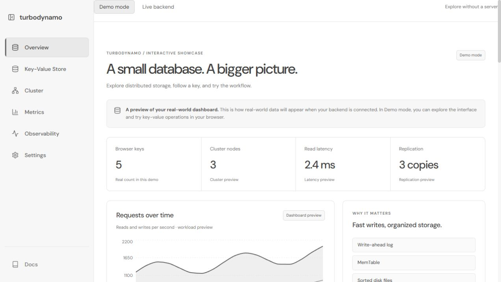

01 / DISTRIBUTED SYSTEMSEXPLORE ↗

DISTRIBUTED DATABASE · FULL STACK
TurboDynamo ↗
A masterless key-value store in Go, with a custom LSM-tree storage engine and a dashboard that makes the system visible.
SELECTED WORK / VANSHIKA SHARMA
A collection of engineering projects, with the thinking behind them and a place to try them out.

A masterless key-value store in Go, with a custom LSM-tree storage engine and a dashboard that makes the system visible.
This collection will grow with the next project.